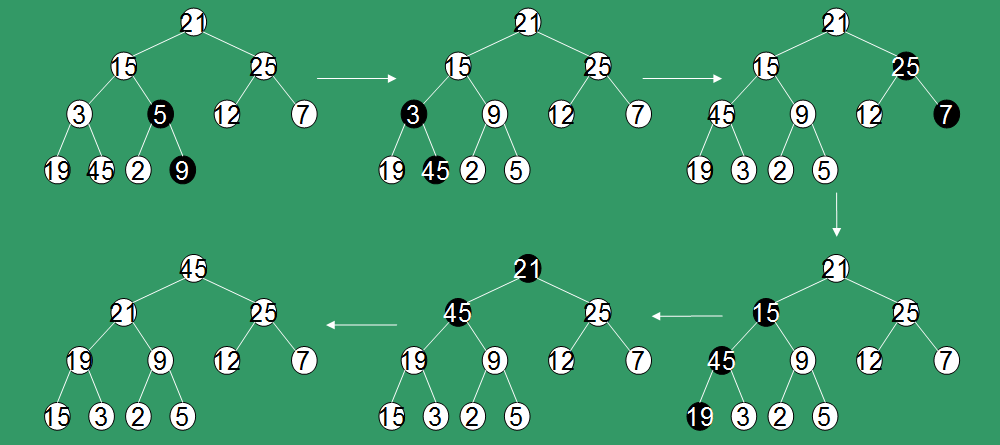

All sorts of sorts
LOTS of different sorts.
Can you name a few?
Sorts we will cover:
- Bubble
- Selection
- Insertion
- Shell
- Heap
- Merge
- Quick
Bubble Sort
- As a buble will float to the surface
- We sort the "bubbles" as the largest element to the right
- Adjacent elements are compared and swapped
- Since each element has to be bubbled to the right multiple passes must be done

Bubble Algorithmn
BubbleSort
Loop n times
Loop n – 1 times
If array(i) > array(i + 1)
Swap (array[i], array(i + 1)
End If
End Loop
End Loop
End BubbleSortWhat is the big O notation? How can we improve this algorithmn
Bubble Algorithmn
Keep track of the the last element:
BubbleSort
Loop n times keep track of the pass number
Loop n – pass - 1 times
If array(i) > array(i + 1)
Swap (array[i], array(i + 1)
End If
End Loop
End Loop
End BubbleSortCan we make this better?
If the list is already sorted we don't need to loop
BubbleSort
Loop n times keep track of the pass number
if sorted equals true - quit
Set sorted = true
Loop n – pass - 1 times
If array(i) > array(i + 1)
sorted = false
Swap (array[i], array(i + 1)
End If
End Loop
End Loop
End BubbleSortNo matter what you do the worst case for bubble sort is always o(n^2)
flagged bubble sort is somewhat efficient in best case scenarios
If the list is already sorted: O(n)
Selection Sort
- In a selection sort we find the largest value and place it at the end of the array
- We then take the largest number from what remains and repeat.
- Continue this process until no values remain.
12 | 5 | 9 | 1 | 2 |
MAX: 12
2 | 5 | 9 | 1 | 12 |
2 | 5 | 9 | 1 | 12 |
MAX: 9
2 | 5 | 1 | 9 | 12 |
2 | 5 | 1 | 9 | 12 |
MAX: 5
2 | 1 | 5 | 9 | 12 |
2 | 1 | 5 | 9 | 12 |
MAX: 2
1 | 2 | 5 | 9 | 12 |
Algorithmn
SelectionSort
For i = 0, i < n - 1
For j = i+ 1, max = i, j < n
if array(j) > array(max)
max = j
End Loop
Swap array(j) and array(max)
End Loop
End SelectionWhat is the big O Notation?
Selection Sort
- This is O(n^2)
Selection Sort
- An array of 1 is a sorted array
- We start with the first element and insert the rest in order
For I = 1 to N
J = I
Do while (J > 1) and (A(J) < A(J - 1)
Temp = A(J)
A(J) = A(J - 1)
A(J - 1) = Temp
J = J - 1
End-Do
End-ForSo what is the big O notation?
STILL O(n^2)
So why learn these three sorts?
Even though they all have the same big O notation bubble sort is probably the slowest
Number of Compares:
insert | n(n-1)/4 |
select | n(n-1)/2 |
bubble | n(n-1)/2 |
More efficent sorts
- The sorts we've covered so far are somewhat simple
- The previous sorts are also very inefficent
Shell Sort
- Slightly better on efficiency.
- Far more complicated to understand
- Named after Donald L. Shell
Shell Sort
- Basic idea we break the data into sub components
- The sub arrays are then sorted
- The original array is then broken into smaller sub-arrays
- sort again!
Shell Sort
What size do we make the chunks?
Shell Sort
It doesn't matter the size as long as we end with 1.
- Don't use increments like 1, 2, 4, 8, 16
- It's less beneficial if the elements of sub-arrays mix together
Shell Sort
Adam Drozdek suggests h(1) = 1; h(i+1) = 3h(i) + 1.
This means if N = 10000 out sequence would be:
1 |
4 |
13 |
40 |
121 |
364 |
1093 |
3280 |
There are three features that vary from one implementation to another:
- The sequence of increments
- A simple sort applied to all passes except the last
- A simple sort applied to the last pass
Shell used an insertion sort for all passes
A 5-sort is when the array is broken into 5 sub-arrays
10 | 8 | 6 | 20 | 4 | 3 | 22 | 1 | 0 | 15 | 16 |
10 | 8 | 6 | 20 | 4 | 3 | 22 | 1 | 0 | 15 | 16 |
10 | 3 | 16 |
3 | 10 | 16 |
3 | 8 | 6 | 20 | 4 | 10 | 22 | 1 | 0 | 15 | 16 |
3 | 8 | 6 | 20 | 4 | 10 | 22 | 1 | 0 | 15 | 16 |
8 | 22 |
8 | 22 |
3 | 8 | 6 | 20 | 4 | 10 | 22 | 1 | 0 | 15 | 16 |
3 | 8 | 6 | 20 | 4 | 10 | 22 | 1 | 0 | 15 | 16 |
6 | 1 |
1 | 6 |
3 | 8 | 1 | 20 | 4 | 10 | 22 | 6 | 0 | 15 | 16 |
3 | 8 | 1 | 20 | 4 | 10 | 22 | 6 | 0 | 15 | 16 |
20 | 0 |
0 | 20 |
3 | 8 | 1 | 0 | 4 | 10 | 22 | 6 | 20 | 15 | 16 |
3 | 8 | 1 | 0 | 4 | 10 | 22 | 6 | 20 | 15 | 16 |
4 | 15 |
4 | 15 |
3 | 8 | 1 | 0 | 4 | 10 | 22 | 6 | 20 | 15 | 16 |
3 | 8 | 1 | 0 | 4 | 10 | 22 | 6 | 20 | 15 | 16 |
3 | 8 | 1 | 0 | 4 | 10 | 22 | 6 | 20 | 15 | 16 |
3 | 0 | 22 | 15 |
0 | 3 | 15 | 20 |
0 | 8 | 1 | 3 | 4 | 10 | 15 | 6 | 20 | 20 | 16 |
0 | 8 | 1 | 3 | 4 | 10 | 15 | 6 | 20 | 20 | 16 |
8 | 4 | 6 | 16 |
4 | 6 | 8 | 16 |
0 | 4 | 1 | 3 | 6 | 10 | 15 | 8 | 20 | 20 | 16 |
0 | 4 | 1 | 3 | 6 | 10 | 15 | 8 | 20 | 20 | 16 |
1 | 10 | 20 |
1 | 10 | 20 |
0 | 4 | 1 | 3 | 6 | 10 | 15 | 8 | 20 | 20 | 16 |
Now with 1
0 | 4 | 1 | 3 | 6 | 10 | 15 | 8 | 20 | 20 | 16 |
0 | 1 | 4 | 3 | 6 | 10 | 15 | 8 | 20 | 20 | 16 |
0 | 1 | 4 | 3 | 6 | 10 | 15 | 8 | 20 | 20 | 16 |
0 | 1 | 3 | 4 | 6 | 10 | 15 | 8 | 20 | 20 | 16 |
ETC
0 | 1 | 3 | 4 | 6 | 8 | 10 | 15 | 16 | 20 | 20 |
Increment Creation
For h = 1, i = 0, h < n
gaps(i) = h
h = 3 * h + 1
reverse(gaps)Sorting
# Start with the largest gap and work down to a gap of 1
foreach (gap in gaps)
{
# Do a gapped insertion sort for this gap size.
# The first gap elements a[0..gap-1] are already in gapped order
# keep adding one more element until the entire array is gap sorted
for (i = gap; i < n; i += 1)
{
# add a[i] to the elements that have been gap sorted
# save a[i] in temp and make a hole at position i
temp = a[i]
# shift earlier gap-sorted elements up until the correct location for a[i] is found
for (j = i; j >= gap and a[j - gap] > temp; j -= gap)
{
a[j] = a[j - gap]
}
# put temp (the original a[i]) in its correct location
a[j] = temp
}
}Shell Sort Analysis
Previous sorts: O(n^2) Shell Short: O(n^1.25)
100 Elements | 1000 Elements | 10000 Elements | |
|---|---|---|---|
n^2 | 10,000 | 1,000,000 | 100,000,000 |
n^1.25 | 316 | 5,623 | 100,000 |
Merge Sort
Merge sort works by splitting an array into halves then merging the elements back together
Merge Sort Steps
- Split the array in half
- Sort the sub arrays by continually breaking them down
- Merge the sub arrays back together
10 | 8 | 6 | 20 | 4 | 3 |
10 | 8 | 6 |
10 | 8 |
8 | 10 |
6 | 8 | 10 |
10 | 8 | 6 | 20 | 4 | 3 |
20 | 4 | 3 |
20 | 4 |
4 | 20 |
3 | 4 | 20 |
10 | 8 | 6 | 20 | 4 | 3 |
6 | 8 | 10 |
3 | 4 | 20 |
3 | 4 | 6 | 8 | 10 | 20 |
Merge Sort Algorithmn
MergeSort (ra, n)
Create temporary array the same size as original
Call MergeSort(ra, temp, 0, n - 1)
Delete the temporary array
End MergeSort (two parameters)Merge Sort Algorithmn
MergeSort (ra, temp, left index, right index)
// Checks to see if there is one element in subarray
if left < right
Set mid = (left + right) / 2
Call MergeSort(ra, temp, left, mid) // Left half
Call MergeSort(ra, temp, mid+1, right) // Right half
Call Merge(ra,temp,left,mid+1,right) // Merge 2 halves
End if
End MergeSort (four parameters)Merge Sort Algorithmn
Merge(ra, temp, left, right, right_end)
Set left_end = right - 1
Set temp_pos = left
Set num_elements = right_end - left + 1
Until we reach the end of ONE of the arrays
if ra (left) <= ra (right)
temp(temp_pos) = ra (left)
increment temp_pos and left
else
temp(temp_pos) = ra (right)
increment temp_pos and right
End if
End Loop
Copy the rest of the left array into the temp array
Copy the rest of the right array into the temp array
Copy the temp array over the top of the original array
End MergeMerge Sort Analysis
- Worst Case: O(n log n)
- Can be made more efficient by replacing recursion with iteration
- insertion sort can be used for portions of the array (sometime more efficient)
- Issue is the amount of memory required to perform.
Quick Sort (QSort)
- One of the quickest sorts
- Recursive
- Most commonly found sort
Steps:
- Choose a pivot pointer
- Ensure that all the numbers that are less than or equal to the pivot point is in a logical left array and those that are greater than or equal to the pivot are in the right
- The arrays are then passed to the quick sort function.
- Continue until there are less than two elements in the array
Step 1: Find the largest number and place it at the end
10 | 8 | 6 | 20 | 4 | 3 | 22 | 1 | 0 | 15 | 16 |
10 | 8 | 6 | 20 | 4 | 3 | 16 | 1 | 0 | 15 | 22 |
Step 2: Choose a pivot
10 | 8 | 6 | 20 | 4 | 3 | 16 | 1 | 0 | 15 | 22 |
Step 3
Now we partition the array.
- Make all the elements to the left less than or equal to the pivot
- All elements to the right are greater than.
10 | 8 | 6 | 20 | 4 | 3 | 16 | 1 | 0 | 15 | 22 |
small | large |
8 < 10
10 | 8 | 6 | 20 | 4 | 3 | 16 | 1 | 0 | 15 | 22 |
small | large |
6 < 10
10 | 8 | 6 | 20 | 4 | 3 | 16 | 1 | 0 | 15 | 22 |
small | large |
20 > 10 stop
10 | 8 | 6 | 20 | 4 | 3 | 16 | 1 | 0 | 15 | 22 |
small | large |
15 > 10
10 | 8 | 6 | 20 | 4 | 3 | 16 | 1 | 0 | 15 | 22 |
small | Large |
0 < 10 stop Swap
10 | 8 | 6 | 0 | 4 | 3 | 16 | 1 | 20 | 15 | 22 |
small | Large |
10 | 8 | 6 | 0 | 4 | 3 | 16 | 1 | 20 | 15 | 22 |
small | Large |
10 | 8 | 6 | 0 | 4 | 3 | 16 | 1 | 20 | 15 | 22 |
small | Large |
10 | 8 | 6 | 0 | 4 | 3 | 16 | 1 | 20 | 15 | 22 |
small | Large |
10 | 8 | 6 | 0 | 4 | 3 | 16 | 1 | 20 | 15 | 22 |
small | large |
Swap
10 | 8 | 6 | 0 | 4 | 3 | 1 | 16 | 20 | 15 | 22 |
small | large |
Now place the pivot at the small
1 | 8 | 6 | 0 | 4 | 3 | 10 | 16 | 20 | 15 | 22 |
Everything to the left is less than 10. Everything to the right is greater Recursively repeat the function for the left and right.
1 | 8 | 6 | 0 | 4 | 3 | 10 | 16 | 20 | 15 | 22 |
Now you finish the sort
Algorithmn
QuickSort (ra, n)
if n >= 2
for (int i = 1, max = 0; i < n; i++)
if (ra(max) < ra(i))
max = i
end loop
Swap(ra(n – 1), ra(max))
QuickSort(ra, 0, n - 2)
end if
End QuickSort (two parameters)QuickSort(ra, first, last)
small = first + 1; large = last; pivot = ra(first);
while(small <= large)
while(ra(small) < pivot)
small = small + 1
while(ra(large) > pivot)
large = large - 1
if(small < large)
Swap(ra(small++), ra(large--))
else
small = small + 1
end if
end loop
Swap (ra(large), ra(first))
if(first < large - 1)
QuickSort(ra, first, upper - 1) // Sort left
if(last > large + 1)
QuickSort(ra, upper + 1, last) // Sort right
End QuickSort (three parametersAnalysis
- The hardest part about q sort is choosing the right pivot point
- The variation we used has issues if the first element is one of the largest or least numbers
- Use the "median of three" pivot instead
Median of three
Take the median of the first, middle and end elements and use that as the pivot
Analysis
- Average case: QSort is O(n log n)
- The worse case: O(n^2)
- What is the worst case?
when the array was ordered
Some algorithmns will use QSort to get it close then insertion sort to finish it.
Heap Sort
Similar to selection sort it divides the data into sorted and unsorted and continually shrinks the size until the data is sorted
Heap
A heap is also known as a priority queue and can be represented as a binary tree
Build the heap
Build the binary tree taking N items as input. Ensure the heap structure property is held
Delete the maximum element in the heap. place it at the end of the sorted array.
For speed and efficiency we will represent the heap as an array
For any node i
- The index of it's parent is i/2
- The index of the left child is 2 * i
- The index of the right child is 2 * i + 1
21 | 15 | 25 | 3 | 5 | 12 | 7 | 19 | 45 | 2 | 9 |
Heapify
Best case for heap sort: O(n) Worst case for heap sort: O(n log n)
Hardest to understand, but very efficient
Other types of sorts not included in lab
- Bucket Sort
- Radix Sort
Bucket Sort
- Turn the array or data into buckets (subcomponents)
- Sort each bucket (or bucket further)
Radix Sort
- Originally developed as a way to sort US census data (1890)
- Sorts digit by digit
- least significant to most significant
- or most significant to least significant
170 | 45 | 75 | 90 | 802 | 2 | 66 |
Sort 1s digit
170 | 0 |
45 | 5 |
75 | 5 |
90 | 0 |
802 | 2 |
2 | 2 |
66 | 6 |
170 | 0 |
90 | 0 |
802 | 2 |
2 | 2 |
45 | 5 |
75 | 5 |
66 | 6 |
170 | 90 | 802 | 2 | 45 | 75 | 66 |
Now the 10s digit
170 | 7 |
90 | 9 |
802 | 0 |
2 | 0 |
45 | 4 |
75 | 7 |
66 | 6 |
802 | 0 |
2 | 0 |
45 | 4 |
66 | 6 |
170 | 7 |
75 | 7 |
90 | 9 |
802 | 2 | 45 | 66 | 170 | 75 | 90 |
Now the 100s digit
802 | 8 |
2 | 0 |
45 | 0 |
66 | 0 |
170 | 1 |
75 | 0 |
90 | 0 |
2 | 0 |
45 | 0 |
66 | 0 |
75 | 0 |
90 | 0 |
170 | 1 |
802 | 8 |
Radix Sort
Worst Case: O(wn)
w: number of digits
Stable Sort
Not a sort on it's own!
A stable sort is any sort that guarantees not to reorder elements of the same value